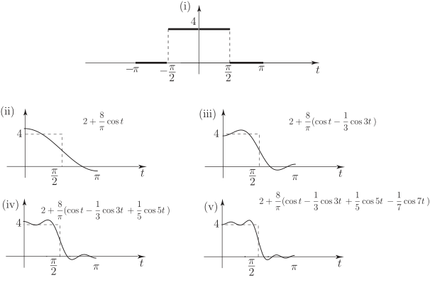

Long description: Block2fig2

Alt text: The image displays five graphs illustrating the representation of a periodic function using a Fourier series expansion.
This description was generated by AI and has not been verified by a human. If you spot an error, please use the feedback link below.
- The image contains five panels, labeled (i) through (v), each depicting a mathematical function plotted against an independent variable labeled \(t\) on the horizontal axis.
- Panel (i) shows a simple rectangular pulse wave that is zero for \(t < -\frac{\text{pi}}{2}\) and \(t > \frac{\text{pi}}{2}\), and has a height of four between these two values.
- Panel (ii) graphs the function \(2 + \frac{8}{\text{pi}} \text{cos}(t)\), which shows a decreasing curve starting at a value near six at \(t = -\frac{\text{pi}}{2}\) and ending at a value near four at \(t = \frac{\text{pi}}{2}\).
- Panel (iii) graphs the function \(2 + \frac{8}{\text{pi}} \text{cos}(t) - \frac{1}{3} \text{cos}(3t)\), which shows a more complex, fluctuating curve, starting at a value near six at \(t = -\frac{\text{pi}}{2}\) and ending at a value near four at \(t = \frac{\text{pi}}{2}\).
- Panel (iv) graphs the function \(2 + \frac{8}{\text{pi}} \text{cos}(t) - \frac{1}{3} \text{cos}(3t) + \frac{1}{5} \text{cos}(5t)\), displaying a curve that oscillates with increasing detail, starting high near \(t = -\frac{\text{pi}}{2}\) and ending lower near \(t = \frac{\text{pi}}{2}\).
- Panel (v) graphs the function \(2 + \frac{8}{\text{pi}} \text{cos}(t) - \frac{1}{3} \text{cos}(3t) + \frac{1}{5} \text{cos}(5t) - \frac{1}{7} \text{cos}(7t)\), showing the most complex oscillation, with the graph appearing to approach the shape of the pulse shown in panel (i) as the series continues to higher harmonics.